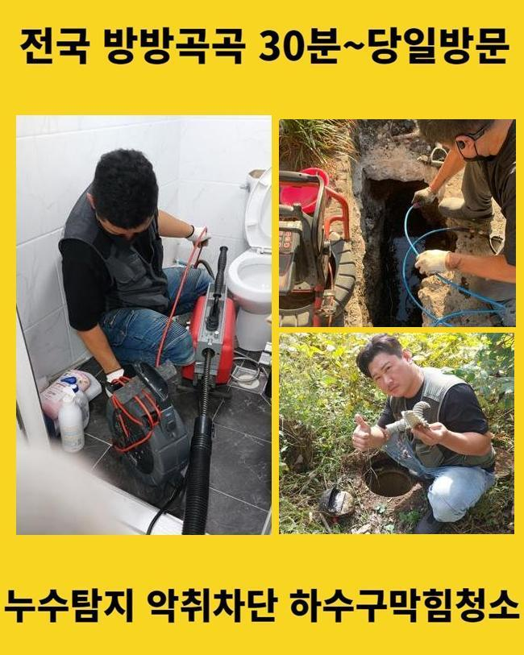
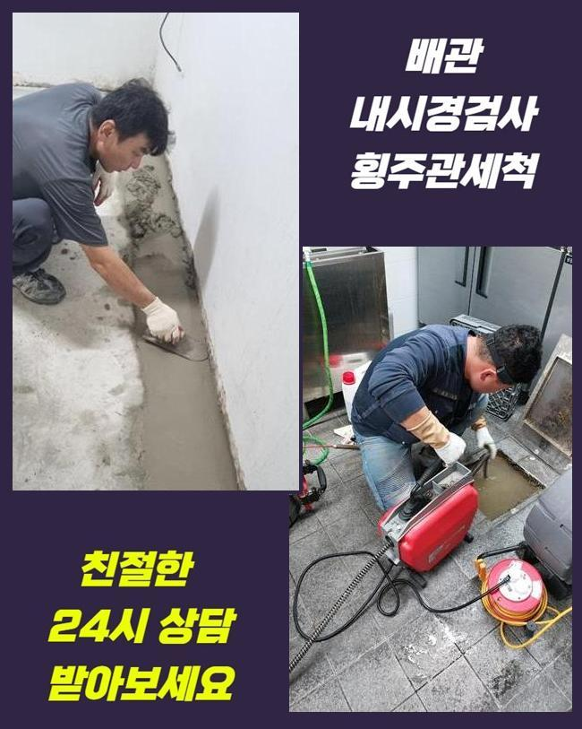
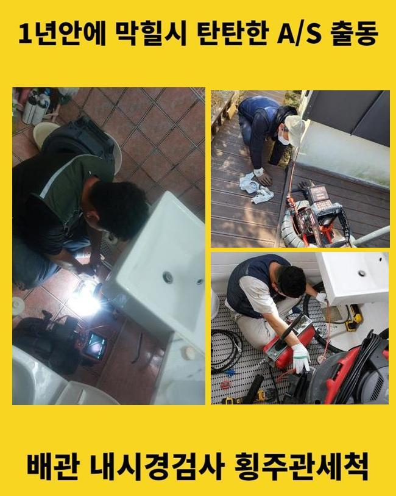
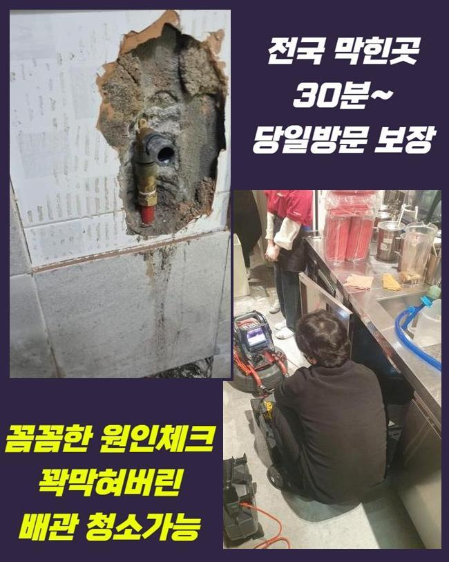
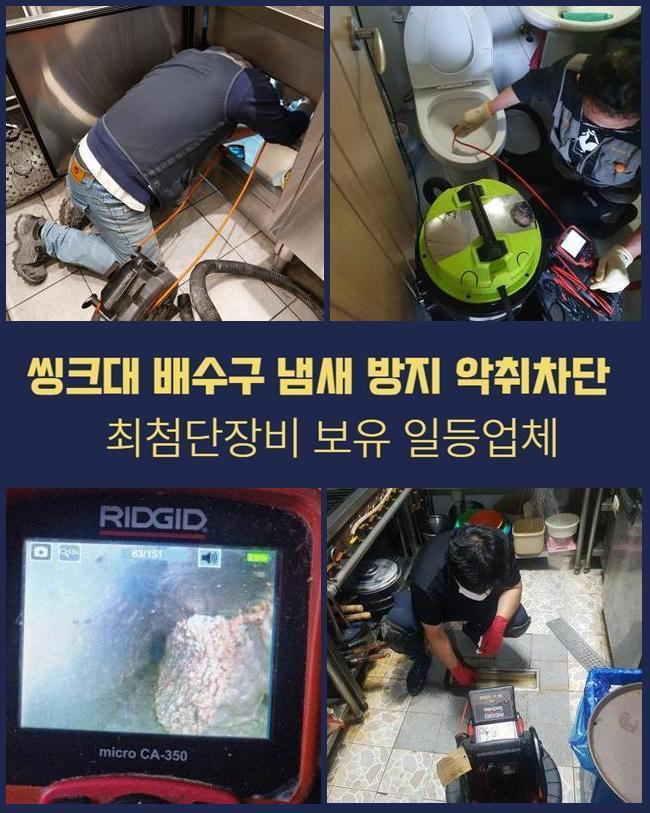
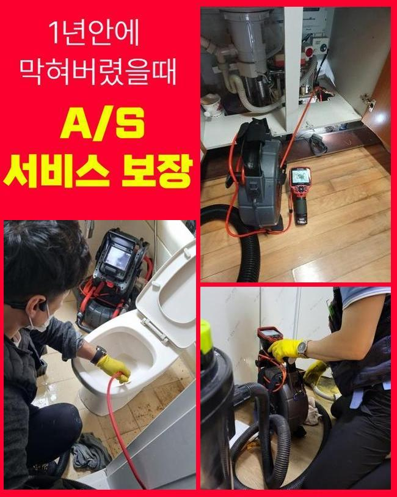

🏠 동대문 제기동화장실하수구뚫음 용신동 하수구청소 설비공사
서울 동대문구 하수구막힘 전문 시공 후기

📋 작업 개요
- 위치: 서울 동대문구, 동대문구, 서울
- 서비스 유형: 하수구막힘, 배관막힘, 역류해결, 뚫는업체, 배관청소, 고압세척, 설비공사
- 작업 일시: 2025. 1. 3. 15:24
- 업체명: 하수구수사대 (010-5615-2118)
🔍 문제 상황
동대문 용두동욕실바닥막힘 청량리동 하수구뚫는업체 배관뚫는업체
일반적으로 하수시스템에 이상이 발생했다면 어떠한 방법들로 해결하실 건가요
가정에서 배수라인이 막힌 경우에 전문장비가 아닌 도구를 이용해서 분해를 해보거나 염산 등의 약품들을 사용하기도 합니다
이처럼 확인되지 않은 방법이나 약제들은 막힌 배관을 해결하기에 무리가 있습니다
옷걸이처럼 날카로운 도구들로 배수라인을 헤집게 되면 배수관에 충격이 누적되어 배관이 망가지게 되며 수리불가로 하수관을 공사해야하는 상황까지 생기게 됩니다
그 외에 산성이 강한 약품들도 이상이 생긴 하수시스템을 해결하는데 큰도움이 되지 못할뿐더러 계속적으로 이용할 경우 하수라인이 녹는 등의 문제로 새로운 설비로 교체하게 되는 경우도 왕왕 있어요
이러한 이유들로 자체적으로 작업하실때는 주의사항을 반드시 확인하시기 바랍니다
저희 업체로 의뢰를 맡기신 사례자님께서도 습관적으로 강한약을 이용하셨고 배수라인의 안쪽면이 녹으면서 머리가 아플 정도의 악취들이 올라온다고 말씀하셨습니다
마트같은 곳에서 판매하는 약들은 전문 기술진이 쓰는게 아니므로 근본적으로 문제점을 처리할 수가 없고 사용하는 사람의 상세한 이해와 기술력이 없는 경우엔 그로인한 효과들도 볼 가능성이 적습니다
약물을 사용하여 얼마간은 문제들이 해결됐다 싶겠지만 하수관에 계속적인 충격을 통해 최악의 상황이 일어나게 됩니다

🔎 원인 분석
💡 전문가 진단: 정밀 진단 장비를 사용하여 슬러지의 고착 여부를 판명하고 타격/세척 작업을 실시했습니다.
이러한 약품을 쓰는 것으로는 석회성분의 오염물이나 딱딱하게 변형된 물질을 처리하는게 쉽지 않습니다
이런 약제로 제거하는게 불가능하다면 배수구가 막히거나 역류하는 경우에 해결하기 위해 어떻게 할까요
배수관이 막혔을때 시공하는 작업을 꼼꼼하게 보여드릴게요!
하수라인이 막혀 물이 안내려간다는 전화를 받고나서 바로 주소지로 달려갔습니다
역류상황에서 수리를 미루다 보면 연쇄적으로 문제가 심해지면서 고약한 냄새가 생길 수도 있기때문에 순환이 정상적이지 않다고 생각되는 경우에 신속하게 처리하는게 필수입니다
의뢰인께서 안내해주신 문제의 배관을 먼저 확인 할 수 있었습니다
역류하는 배수관을 파악했으나 장비없이는 자세한 진단이 불가능하여 배수구 안쪽 부분을 점검하기로 했어요
우선적으로 하수관 내시경장치를 이용했습니다
내시경기를 활용하면 막힌 배관의 현재 상태를 알 수 있기때문에 신속정확하게 작업과정을 진행하게 됩니다
내시경노즐선을 하수구를 통해 투입하고 실시간으로 보며 막힘을 유발하는 이유들과 배수관의 상태를 첫번째로 확인했어요

🔧 작업 과정
배수관 속을 확인해보니 석회질의 오염물질이 하수구를 막고있어 정상적인 순환이 불가능한 상황이였어요
사례자님께 석회가루가 섞인 침전물이 하수라인에 가득 쌓였다고 설명 드렸고 이후 과정을 말씀 드렸어요
내벽에 달라붙은 석회질을 파쇄하기 위해서 스케일링 과정들을 이어나갔습니다
스케일링과정이란 석회질을 제거하는 방법으로 배수구 안쪽 부분을 세척하는 작업이예요
샤프트기기를 활용해서 강하게 도는 체인들이 하수관에 정확히 맞아 떨어지며 오염물질을 파쇄시키며 하수관을 정상적으로 수리할 수 있었습니다
이런 석회의 원인으로는 매일 샤워를 하며 생기는 찌꺼기와 불순물이 굳어지면서 만들어집니다 시간이 흘러갈수록 조금씩 쌓이다가 배수관을 막게 되지요
스케일링과정은 내시경기를 활용하여 하수라인을 전체적으로 확실하게 작업해요
역류상황이 심각했던 배수관을 장시간 집중적으로 작업해서 막힘상황을 해결 할 수 있었어요
작업을 하는 중간에도 하수라인의 내부상태를 체크하며 석회질이 점진적으로 사라지고 있는것을 알 수 있었어요
배관에 조금씩 붙어있던 석회질까지 전부 청소했습니다
소량이라도 침전물이 하수관에 남아있다면 재발의 염려가 있으므로 남는 부분이 없게끔 청소를 진행해요
잘게 부순 불순물을 파쇄하기 위해서서 석션기를 활용했습니다
석션장치를 사용해 남아있던 침전물까지 전부 제거하고 배수관의 내부 부위를 한번더 점검했어요
하수관이 완전하게 복구된걸 확인한 후에 수도를 틀어서 이상이 없는지 최종점검을 했습니다
한번에 가득 채운 물을 내려보내도 문제없이 배수되었고 하수관에 다량의 물들이 내려가며 역류상황등의 일도 없이 순환이 잘 되었습니다
의뢰인께 작업을 마무리한 후에 관리방법과 주기적인 청소를 말씀 드리고 작업부위를 깨끗히 청소했습니다


✅ 작업 완료
저희 전문진이 깨끗하게 작업을 완료했으니 이후 하수라인을 사용하실때에 사례자님께서도 거름망을 사용하여 불순물을 걸러내게끔 관리와 청소에 신경을 쓰셔야해요
배관은 관경이 좁으므로 작은 불순물도 막힘문제의 이유가 됩니다
이와 같은 사례처럼 사례자님께서도 고생을 하고 계시다면 저희 전문진에게 언제든 연락주시기 바랍니다
친철하게 안내하겠습니다




⚠️ 하수구 배관 막힘 예방 및 관리 가이드
- ✅ 머리카락, 비닐, 물티슈 등 물에 분해되지 않는 이물질은 하수구 유입을 절대 금지해 주세요.
- ✅ 하수구 거름망을 씌우고 모여진 이물질은 주기적으로 쓰레기통에 바로 비워주셔야 합니다.
- ✅ 배관 노후가 심할 경우 이물질이 더 쉽게 걸리므로 주기적인 배관 세척(고압세척 등)을 권장합니다.
- ✅ 작업 후 1년 이내 재발 시 하수구수사대에서 무상 A/S 보증 서비스를 제공합니다.
💡 핵심 정리
- 확실한 장비 작업(내시경 점검 및 샤프트 스케일링)으로 원인을 뿌리 뽑습니다.
- 작업 후 1년 이내에 동일한 부위 재발 시 100% 무상 A/S 서비스를 보장합니다.
- 서울 · 경기 · 인천 전 지역에 24시간 언제든 긴급 출동할 수 있도록 항시 대기 중입니다.
❓ 자주 묻는 질문 (FAQ)
🚨 서울 동대문구 하수구막힘 문제로 고민이신가요?
정확한 원인 진단과 확실한 시공으로 재발 없는 해결을 약속드립니다.
24시간 긴급 출동 | 서울 · 경기 · 인천 전지역 | 1년 내 재발 시 무상 A/S